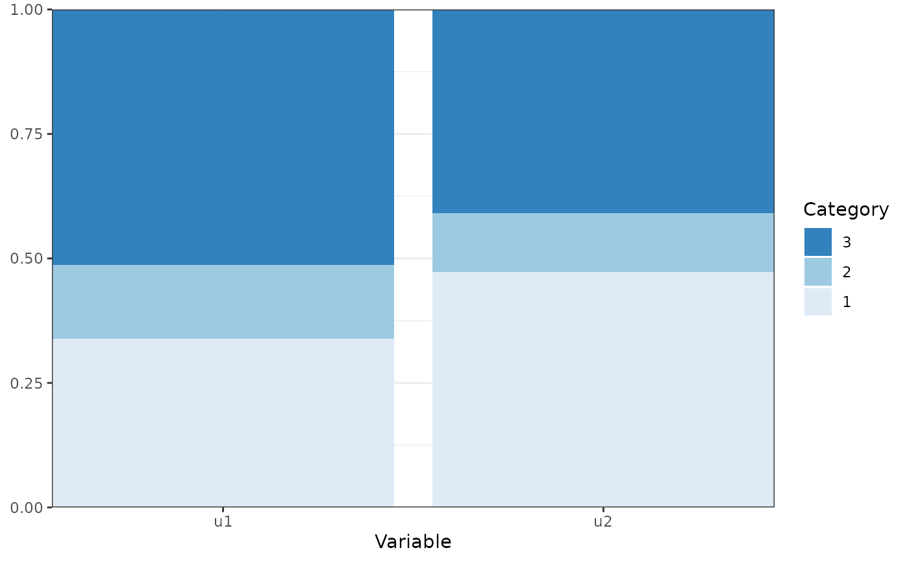

Creates a bar chart of categorical variable probabilities with bars reflecting the probability of category membership for each category of the observed variable.
Arguments
- x
An object for which a method exists
- variables
A character vectors with the names of the variables to be plotted (optional).
- bars
Atomic character, indicating what separate bars represent. One of
c("Variable", "group", "class").- facet
Atomic character, indicating what separate facets represent. One of
c("group", "class", "Variable").- bw
Logical. Should the plot be black and white (for print), or color?
- ...
Arguments passed to and from other functions.
Examples
df_plot <- data.frame(Variable = rep(c("u1", "u2"), each = 3),
Category = rep(1:3, 2),
Probability = c(0.3381302605812, 0.148395173612088, 0.513474565806711,
0.472337708760608, 0.118484201496432, 0.40917808974296))
plot_prob(df_plot)
